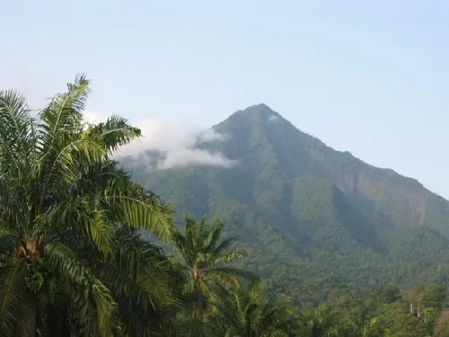
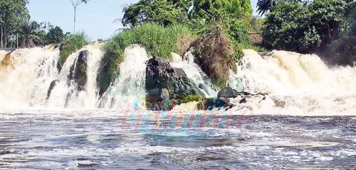
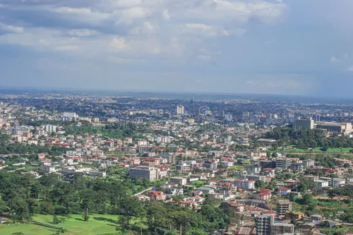
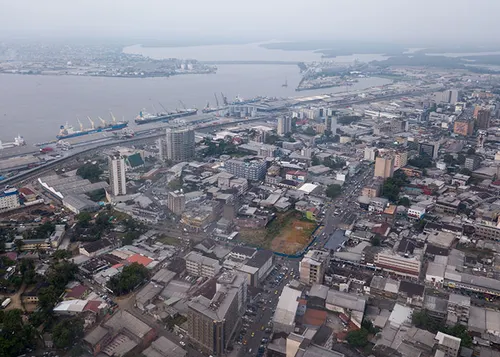
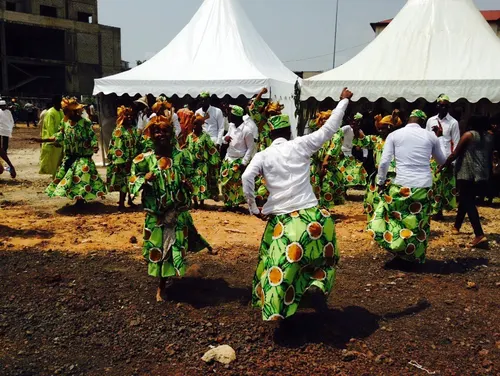
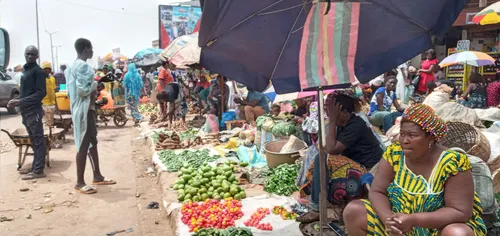

Ma galeire photo du Cameroun
Bienvenue dans ma galerie photo dedie au cameroun.le Cameroun est un pays ,
de l'Afrique centrale connu pour sa grande diversite de.
Paysages


Le mont Cameroun et les chutes de la lobe pres de kribi
Villes


Yaounde la capitale politique du Cameroun Douala capitale economique du Cameroun
Culture


Danse traditionnelle camerounaise lors d'une ceremonie Un marche local refletant la vie quotidienne et la culture camerounais